| Image | | | | | Summary |
| 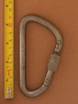 | 123 (KB10-S) v1 | asymmetric D | manual | nose stopped - boss | japanese 10mm steel screwlock |
 | 123 KB10-S v2 | asymmetric D | manual | nose stopped - boss | japanese 10mm steel screwlock |
| AustriAlpin (Steel D) (reverse notch & window) | asymmetric D | manual | gate stopped - gate stop | unique reverse notch & hole gate, plastic threads |
 | AustriAlpin (Steel HMS) (reverse notch & window) | HMS | manual | gate stopped - gate stop | unique reverse notch & hole gate, plastic threads |
| 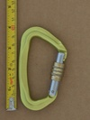 | AustriAlpin Eleven ID Screwlock | asymmetric D | manual | gate stopped - gate stop | modern workhorse carabiner with host of features: unique ID# semi-guarded nose, thick locking sleeve, ring-dimpled rivets |
| 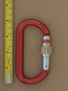 | AustriAlpin Ovalo GI Screwlock Brass Sleeve | offset oval | manual | gate stopped - gate stop | heavy workhorse oval-ish with modern features |
 | AustriAlpin Sym Oval Clawlock Screwgate v1 | oval | manual | nose stopped - unknown | clawlock nose, nose-stopped locking sleeve |
 | BONAITI (D screwlock) (round sleeve) | D | manual | nose stopped - rotational interferance | early screwlocker with unique nose-stop mechanism |
 | BONAITI (D) (Screwlock) | D | manual | nose stopped - longitudinal interferance | nose-stopped D screwlock |
 | BONAITI (Oval Screwlock) | oval | manual | nose stopped - longitudinal interferance | nose-stopped oval screwlock |
 | Beal Be Quick | asymmetric D | manual | gate stopped - unknown | lightweight screwlocker |
 | BetaBiner (D Locking) | D | manual | nose stopped - longitudinal interferance | locking d by iconic brand |
 | Black Diamond (Unknown Big D) | asymmetric D | manual | gate stopped - snap-ring | robust large asymmetric d |
 | Black Diamond Airlock Screwgate (1997) (flat seat) (red sleeve) | S-spine | manual | nose stopped - longitudinal interferance | early BD tapered sleeve |
| 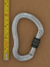 | Black Diamond Airlock Screwgate (1997) (recessed seat) (green sleeve) | S-spine | manual | nose stopped - longitudinal interferance | early BD tapered sleeve |
| 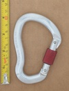 | Black Diamond Airlock Screwgate (≤1996) | S-spine | manual | nose stopped | early s-spine HMS |
 | Black Diamond Big D | asymmetric D | manual | hinge stopped | threaded sleeve blocks the hinge rather than nose |
| 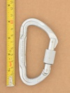 | Black Diamond Big Easy Screwgate | asymmetric D | manual | nose stopped - longitudinal interferance | compact locker | narrowed spine permits gate/spine overlap |
 | Black Diamond Enduro Screwgate | asymmetric D | manual | gate stopped | with quicksilver & positron screwlocks demonstrates evolution of BD compact lockers |
 | Black Diamond GridLock Screwgate | hourglass | manual | gate stopped | iconic belay carabiner with anti-crossloading feature |
 | Black Diamond Light D Locking | D | manual | hinge stopped | hinge lock version of the Light D |
 | Black Diamond LiteForge Screwgate | asymmetric D | manual | gate stopped | BD's lightweight screwgate |
 | Black Diamond Mini Pearabiner (v2) | HMS | manual | gate stopped | typical HMS screwgate |
 | Black Diamond Mini Pearabiner v1 | HMS | manual | gate stopped | classic HMS |
| 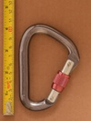 | Black Diamond Mini Pearabiner v1b | HMS | manual | gate stopped | basic HMS |
 | Black Diamond Oval Keylock Screwgate | oval | manual | gate stopped | lightweight oval |
 | Black Diamond Pearabiner (1990+) v1 | HMS | manual | hinge stopped | threaded sleeve blocks the hinge rather than nose |
| 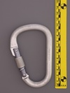 | Black Diamond Pearabiner (1990+) v2 | HMS | manual | hinge stopped | early BD carabiner, hinge blocked screwgate |
 | Black Diamond Positron Screwgate | asymmetric D | manual | gate stopped | with quicksilver screwlocks demonstrates evolution of BD compact lockers |
 | Black Diamond Quicksilver2 screwgate | asymmetric D | manual | gate stopped | with enduro & positron screwlocks demonstrates evolution of BD compact lockers |
| 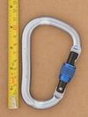 | Black Diamond RockLock Screwgate (dot-peened batch #) | HMS | manual | gate stopped - snap-ring | BD's standard full-sized HMS |
 | Black Diamond RockLock Screwgate (laser batch #) | HMS | manual | gate stopped - snap-ring | BD's standard full-sized HMS |
 | Black Diamond VaporLock v1 | HMS | manual | gate stopped | ultralight HMS carabiner |
 | Black Diamond VaporLock v2 | HMS | manual | gate stopped | ultralight HMS carabiner |
 | BlueWater (screwlock D) (plain finish) | D | manual | nose stopped - longitudinal interferance | basic whitelabel screwlocker |
| 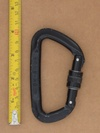 | CAMP Clip Screwgate | asymmetric D | manual | gate stopped | budget screwgate |
 | CAMP HMS (Bet Climb) | HMS | manual | gate stopped - unknown | reverse notch & pin snagless nose |
 | CAMP Orbit Screw Lock (square knurling) | asymmetric D | manual | gate stopped - gate stop | compact locker |
| 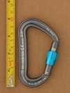 | CAMP Photon Lock | asymmetric D | manual | gate stopped - unknown | high-quality lightweight screwlocker |
 | Chouinard Big D 1983 | asymmetric D | manual | gate stopped - thread runout | threaded sleeve blocks the hinge rather than nose |
 | Chouinard Light D Locking 1984 | D | manual | gate stopped - thread runout | threaded sleeve blocks the hinge rather than nose |
 | Climb High-USA (D) (screwlock) | D | manual | gate stopped - thread runout | basic symmetrical d screwlock |
 | Clog (Asymmetric D Screwlock) (2800) | asymmetric D | manual | gate stopped - unknown | strong classic Clog screwlock D |
| 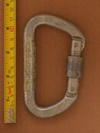 | Clog (OUTSIDE) | asymmetric D | manual | gate stopped - unknown | older screwlock with gate stops |
 | Clog (Reverse Asymmetric D Screwlock) (2500) | asymmetric D | manual | nose stopped - longitudinal interferance | screwgate with unique lower sleeve stop |
 | DMM Belay Master (v1) | HMS | manual | gate stopped | early belay specific carabiner, side-gate anti-crossload |
| 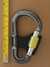 | DMM Belay Master v3 | HMS | manual | gate stopped - gate stop | modern version side-gate anti-crossload carabiner |
| 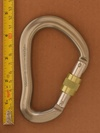 | DMM Big Boa Screwlock | HMS | manual | gate stopped - gate stop | large 2000's screwlock |
 | DMM Captive Eye Keylock Screwgate | other | manual | gate stopped - gate stop | captive eye screwgate carabiner |
 | DMM Klettersteig Alloy Anti-Vibe Screwgate | asymmetric D | manual | gate stopped - gate stop | anti-vibration screwlock resists accidental opening |
 | DMM Mamba (Screwgate) | asymmetric D | manual | gate stopped - gate stop | first hot-forged carabiner & captive eye for webbing |
 | DMM Phantom Screwgate | asymmetric D | manual | gate stopped - gate stop | ultralight, ultracompact locker |
 | DMM Revolver Screwgate v1 | S-spine | manual | gate stopped - gate stop | screwgate version of the original integral pulley carabiner |
 | EIGER USA Locking D | D | manual | gate stopped - gate stop | vintage locking carabiner |
 | Edelrid (HMS) | HMS | manual | gate stopped | basic hot forged HMS |
 | Edelrid Oval Power 2500 Permalock | offset oval | assisted | gate stopped - gate stop | multi-stage screw lock: button + screw lock |
 | Edelrid Pure Screw Locking | asymmetric D | manual | gate stopped | screwlock version of Pure Slide |
| 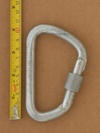 | Edelweiss / Kong (large D) | asymmetric D | manual | gate stopped - thread runout | Kong produced carabiner for Edelweiss |
| 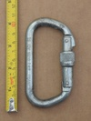 | Foin D Screwgate | D | manual | nose stopped - longitudinal interferance | prominent nose-stop & lathe-turned lower gate stop |
 | Glacier Black Big Tony HMS | HMS | manual | gate stopped - unknown | budget HMS |
 | Glacier Black Revolve | asymmetric D | manual | gate stopped - unknown | budget integrated pulley carabiner |
 | Grivel Plume Nut | asymmetric D | manual | gate stopped - gate stop | ultralight ultracompact screwlocker |
| 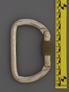 | HIATT (D) (steel) | D | manual | gate stopped - unknown | crude production steel carabiner |
 | Hugh Banner (HMS Screwgate) | HMS | manual | gate stopped - machined shoulder stop | late 20th century screwlock |
 | KONG-BONAITI (D) (screwlock) | D | manual | nose stopped - longitudinal interferance | basic screwlock D |
 | Kong (Offset Oval Screwlock) (Patent Gate Stamp) | offset oval | manual | gate stopped - thread runout | late 90's keylock oval |
 | Kong (Offset Oval Screwlock) (Patent Spine Stamp) | offset oval | manual | gate stopped - thread runout | late 90's keylock oval |
 | LAPRADE MONTAGNE (asym'd screwlock) | asymmetric D | manual | gate stopped - unknown | textured spine grip, slanted gate top |
| 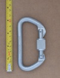 | Liberty Mountain D | D | manual | gate stopped | basic symmetrical d |
 | Liberty Mountain Steel D Keylock | HMS | manual | gate stopped | typical modern steel screwlock with keylock nose |
 | MSR Locking D I-biner (purple sleeve) | asymmetric D | manual | gate stopped - unknown | MSR brand (known now for camping stoves) |
 | Mad Rock Gemini | other | manual | gate stopped | unique twin compartment carabiner design with directionally interlocked gates |
| 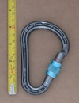 | Mammut Bionic HMS | HMS | manual | gate stopped | early webbed I-beam, hourglass sleeve |
 | Mammut Classic Screwgate | asymmetric D | manual | gate stopped | basic screwgate with milled nose |
| 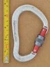 | Mammut HMS (Big Boa) | S-spine | manual | gate stopped - thread runout | high-quality whitelabel HMS made by DMM |
 | Mammut Smart HMS v1 | HMS | manual | gate stopped | side gate provides anti-crossload & anti-unlock |
 | Metolius Bravo Locker | asymmetric D | manual | gate stopped | finely threaded sleeve |
 | Metolius Element Belay Carabiner (large markings) (24 kN) | HMS | manual | gate stopped | finely threaded sleeve, symmetric HMS |
 | Metolius Element Locker (small markings) (24 kN) | HMS | manual | gate stopped | finely threaded sleeve, symmetric HMS |
 | Metolius Gatekeeper Screwlock | asymmetric D | manual | gate stopped | gated captive end, fine threading |
 | Ocún Condor HMS Screw | hourglass | manual | gate stopped - thread runout | internal wiregate hourglass screwlock |
 | Omega (UL Classified D) (black) | D | manual | gate stopped | Full NFPA G rated carabiner - 72 kN |
| 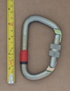 | Omega 08 | D | manual | gate stopped | half-inch steel barstock D |
| 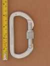 | Omega Locking D | D | manual | nose stopped - longitudinal interferance | basic nose-stopped screwlocking D |
 | Omega Pacific Five-O Locking Gate (forged markings) | S-spine | manual | gate stopped - gate stop | Omega Pacific's flagship carabiner in the early 2000's |
 | Omega Pacific Jake Keylock Screw Lock | HMS | manual | gate stopped - thread runout | last iteration of this iconic HMS carabiner |
 | Omega Pacific Jake Screw-Lok | HMS | manual | nose stopped | classic HMS, offset gate |
 | Omega Pacific Standard Locking D | D | manual | gate stopped | symmetric D |
 | Omega Pacific Standard Oval Locking | oval | manual | gate stopped | overbuilt oval |
 | Petzl Attache (23/7/6) | HMS | manual | gate stopped | iconic HMS design |
 | Petzl Attache 3D Universo | HMS | manual | gate stopped | belay device retainer and prominent gate-stop |
| Petzl OK (large relief hole) | offset oval | manual | gate stopped - snap-ring | one of the first keylock ovals |
| Petzl OK (small relief hole) | offset oval | manual | gate stopped - snap-ring | one of the first keylock ovals |
 | Petzl Spirit Screw Lock (v2) | asymmetric D | manual | gate stopped | slick, well designed compact locking carabiner |
| 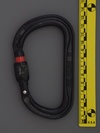 | Petzl Vulcan SLN | asymmetric D | manual | gate stopped - unknown | high quality I-beam industrial steel carabiner |
 | Petzl William Screw Lock | HMS | manual | gate stopped - unknown | screwlock version of iconic HMS carabiner |
 | REI (asymmetric D - locking carabiner) | asymmetric D | manual | gate stopped - gate stop | screwlocker with unique extruded aluminum sleeve |
 | REI (locking d) v1 | D | manual | nose stopped | inexpensive locking D from a transitional period of carabiners |
 | REI (locking d) v2 | D | manual | nose stopped | demonstrates changes in ratings and markings over v1 |
 | REI Gold D Locking Carabiner (angled nose) | asymmetric D | manual | gate stopped - thread runout | Green is Go locking indicator |
| 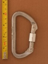 | REI Gold D Locking Carabiner (stepped nose) | asymmetric D | manual | gate stopped - unknown | Green is Go locking indicator |
 | REI HMS Screwgate | HMS | manual | nose stopped | REI branded carabiner |
 | SMC (large D) (screwlock) | asymmetric D | manual | gate stopped - unknown | full sized a'sym screwlock |
 | SMC D Locking (full-thread) | D | manual | other stopped | bi-directional locking due to full length thread |
| 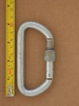 | SMC D Locking (half-thread) | D | manual | nose stopped - longitudinal interferance | vintage screw locker from an era when lockers were a luxury |
 | SMC D Locking (proud nose) | D | manual | nose stopped | budget screw locker from an era when lockers were a luxury |
 | SMC Large Steel Locking D | D | manual | gate stopped - unknown | large symmetric NFPA G Steel D |
| 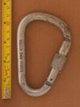 | Stubai (HMS) | HMS | manual | gate stopped - gate stop | HMS carabiner with a notch & (windowed) hole gate latch |
 | Stubai Asymmetric Type D | asymmetric D | manual | nose stopped - longitudinal interferance | clawlock nose, nose-stopped locking sleeve |
 | Trango React Screwlock | asymmetric D | manual | gate stopped - gate stop | quality budget keylock screwgate |
 | Trango SuperFly Screwlock | asymmetric D | manual | gate stopped - unknown | lightest locker available in 2005 |
 | Trango WideBody Screwlock | S-spine | manual | gate stopped - thread runout | S-spine HMS circa 1999 |
| 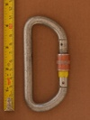 | Unmarked (D screwlock) | D | manual | gate stopped - thread runout | early style screwlocker from an unknown brand |
| 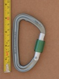 | Wild Country EOS | asymmetric D | manual | gate stopped - unknown | modern medium screwlocker with extruded sleeve |
| 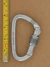 | Wild Country Microlite (screwlock) | asymmetric D | manual | nose stopped - longitudinal interferance | late 80's lightweight screwlock |
 | Wild Country Neon Screwlock | asymmetric D | manual | gate stopped | an excellent light weight screwlock carabiner |
 | ace (locking d) | D | manual | nose stopped - longitudinal interferance | ace + Edelrid carabiner |
 | ИРЕМЕЛЬ (Iremel) 0192/2200 | asymmetric D | manual | gate stopped - gate stop | russian carabiner |